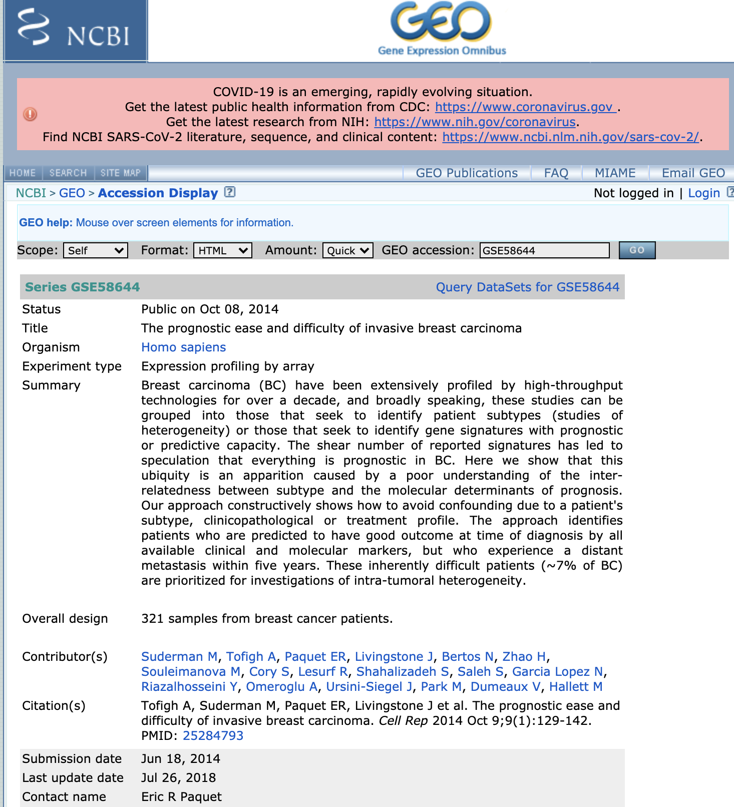

Organizing the Tara Oceans data
M Hallett
21/07/2020
Plan for Today
Map of where we are

- But before returning to Survivorman …
Other mandates for Bioinformatics
We talked earlier about issues of storing data and making it accessible.
There are at least four additional mandates for the field of Bioinformatics related to standards.
- Standards for data representation
- Standards for software and data structures
- Standards and policy for ethics and data sharing
- Standards for reproducibility
Standards for data representation
For data, this is primarily about setting formats for how data is uploaded to a public database, and what type of metadata is needed. For example:
– The MIAME standard and fsubsequent formats for other data types at FGED.
– uploads to the NCBI

Standards and policy for ethics in biology
Standards for reproducibility
We will revisit issues of reproducbility near the end of the course.
Software and data structure standards
For software, this often is about standarizing the data structures used to represnt a specific type of biological data.
Eg FASTA format for sequence data, Newick format for phylogenetic trees, PDB files for protein structure, etc.
Bioconductor provides tools for the analysis and comprehension of high-throughput genomic data. Bioconductor uses the R statistical programming language, and is open source and open development.
Bioconductor develops standards for data storage in different domains. – single cell expression.
Bioconductor provides R packages for download. These are installed a bit differently than “normal” R packages.
Packages in R.
To date, you have been using the \({\tt library}\) function to load a specific package like the \({\tt tidyverse}\). For example, \({\tt library(tidyverse)}\)
The \({\tt library}\) loads that package from your disk (at the RStudio Cloud server) into your session.
But where did this package come from?
You will notice a \({\tt Packages}\) option in the lower right quadrant of RStudio. This lists all the package that are available to you.
If you want a package, you need to download it first to your disk. This window allows you to do it cnveniently from a R package repository such as CRAN…
Installing packages
Another way is to download the package yourself from the Comprehensive R Archive Network (CRAN).
For example, \({\tt install.packages(tidyverse)}\) downloads the tidyverse package. That gets it to your disk and ready to be loaded into your session.
Now \({\tt library(tidyverse)}\) loads the library from your disk into your R session.
(You can also submit your package to CRAN, and they will make it available globally, but they enforce rules and standards to ensure compatability and good practices.)
Other R repositories
CRAN is one place get R repositories.
A second is from Bioconductor. You download and install Bioconductor packages a bit differently.
First you need the Bioconductor package itself:
#if (!requireNamespace("BiocManager", quietly = TRUE))
# install.packages("BiocManager")
#BiocManager::install()
#BiocManager::install(c("GenomicFeatures", "AnnotationDbi"))
#BiocManager::available()… now back to our regularly scheduled program.
Survivorman’s goals last class
To understand the nature of the data at Sunagawa et al.
Some Unix.
The notion of a \({\tt raw}\) folder
\({\tt wget}\) in Unix to download straight to RStudio Cloud.
Using Google to find a way to import a multi-sheet spreadsheet.
We ended with the realization that it was uploaded as a \({\tt list}\).
Survivorman’s goals: today
Finish importing the Tara Oceans data and learn some more R along the way
The \({\tt list}\) data structure
\({\tt factors}\)
The principles of tidy data
\({\tt longer, wider, seperate, unit}\)
\({\tt intersect, setdiff, union}\)
Inner and outer joins.
Now …
- Back on location on our remote south pacific island…
BIOL 480 on location
© M Hallett, 2020 Concordia University